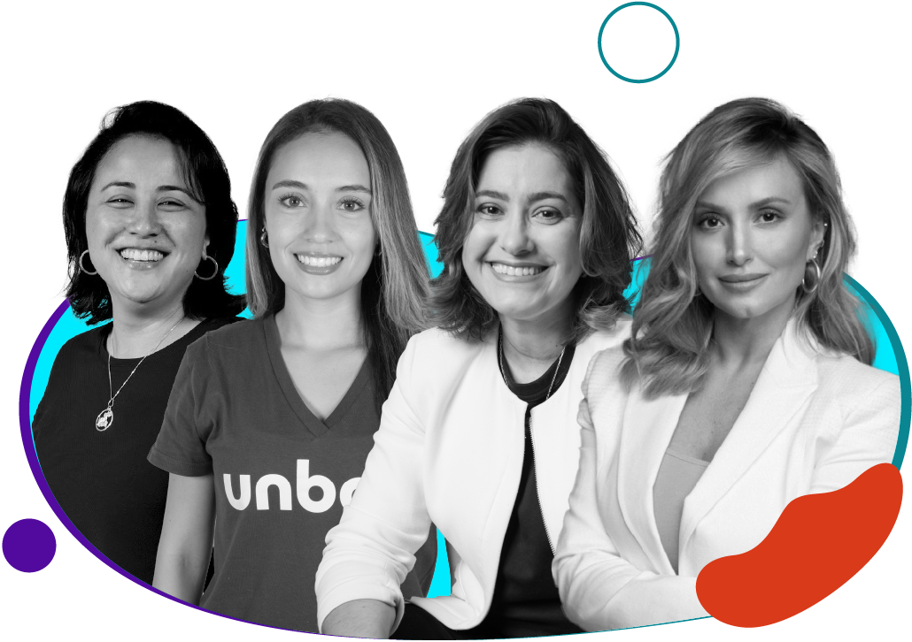
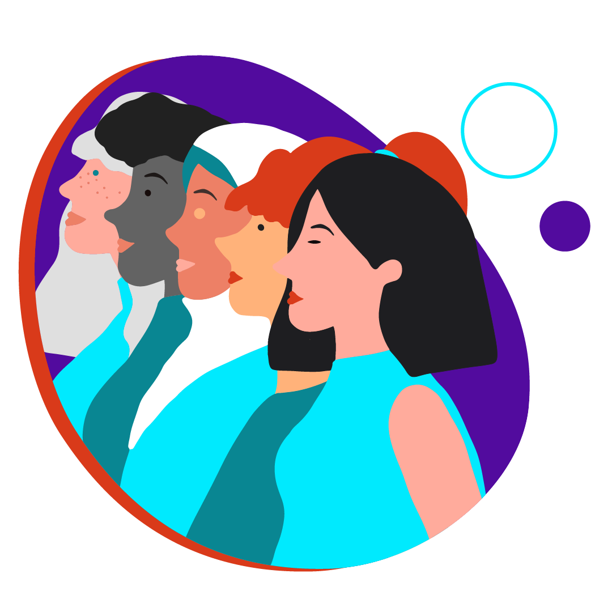
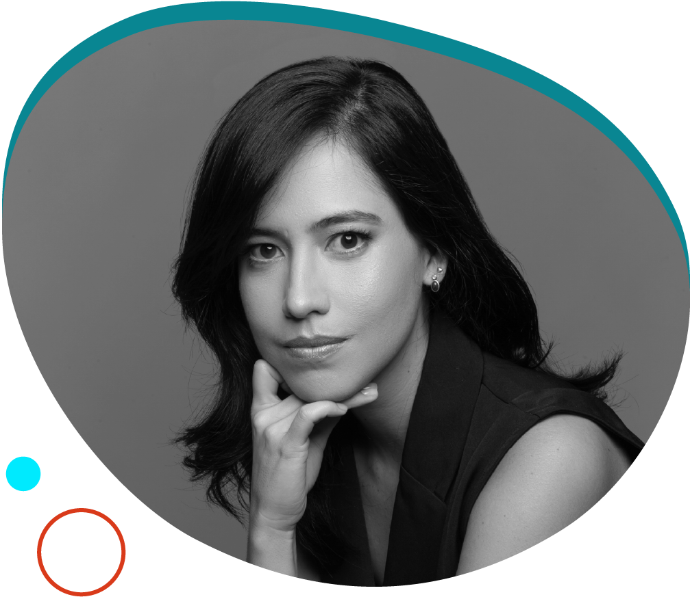
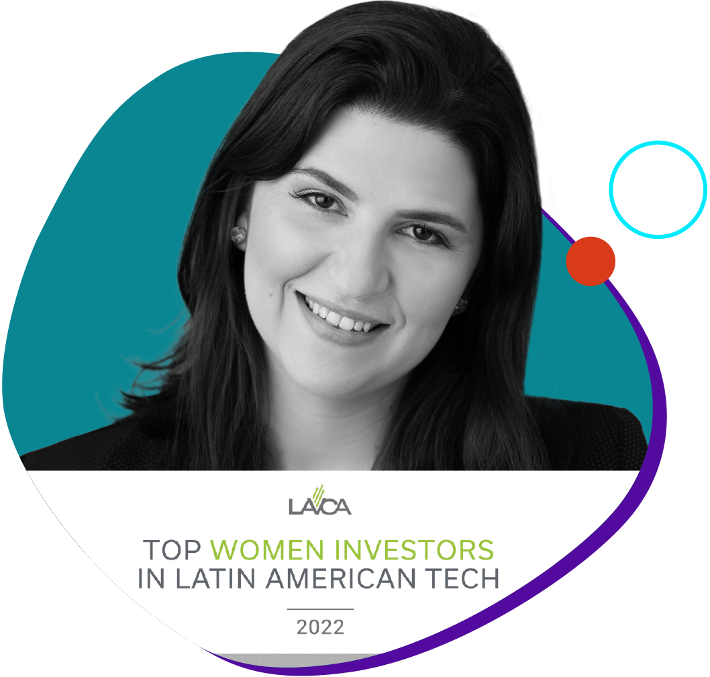
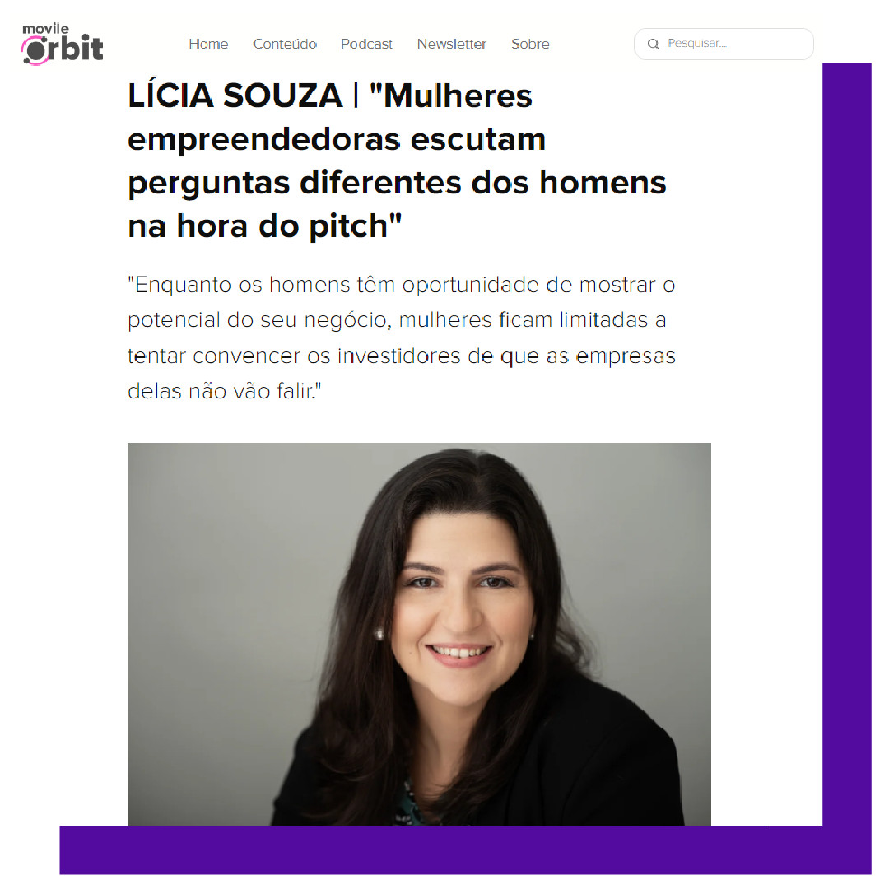
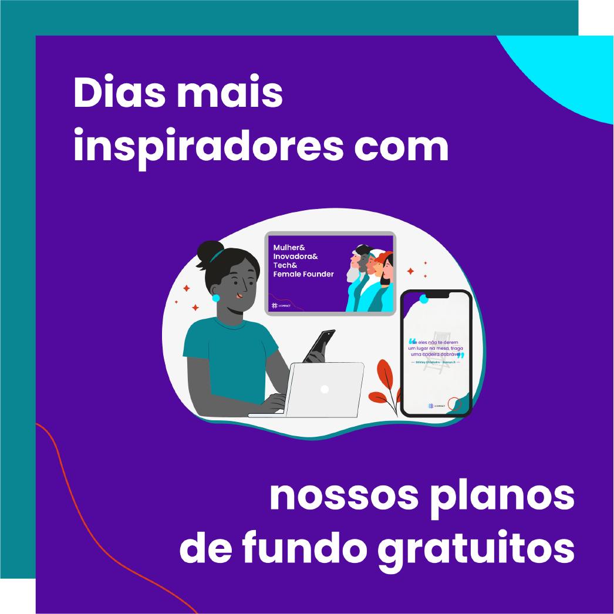

Não queremos ir para o spam! =) selecione este email como “confiável” ou mova-o para a Caixa de Entrada.
Boas-vindas oficiais! links de fundo bege na style= "color: #520b9e"!!!!!!!!!!
A Cash.in se tornou integrante do nosso portfólio após uma rodada de R$ 7 milhões liderada pela Bertha Capital, com participação da WE Impact e da Thales.
Mas o nosso relacionamento vem de uma longa data: suas fundadoras participaram do programa de desenvolvimento voltado para mulheres que empreendem em tecnologia que realizamos em 2020.
A fintech, que desburocratiza o pagamento de prêmios digitais, se destaca por oferecer uma gestão completa para as companhias e flexibilidade para os colaboradores. Com o aporte, a intenção é otimizar ainda mais a plataforma, lançar novas features e aumentar o time.
Está aproveitando a leitura?
Que tal compartilhar essa edição da WE Impact News com outras empreendedoras e empreendedores da sua rede de contatos? 😉
#WIN – WE Impact Network
Hackeando o sistema

Por ,
Ser mulher e empreendedora é ter que lidar com desafios impostos ao gênero, muitos deles que influenciam a remuneração, o acesso ao capital e a representatividade.
Acima de tudo, ser mulher empreendedora é não desistir diante das adversidades, aprender a hackear o sistema e utilizar seus negócios para gerar impacto positivo.
É isso que as investidas WE vem fazendo! Elas não têm as respostas para todas as perguntas, mas compartilham suas experiências pessoais de como encontraram oportunidades e soluções para trilhar suas jornadas. Esses conselhos valiosos podem ser a chave para impulsionar sua trajetória.
título lista JSON
texto lista JSON
texto lista JSON
texto lista JSON
texto lista JSON
#DiversidadenaPrática
+ diversidade = + produtividade

Você já deve ter ouvido falar que times diversos contribuem para uma empresa mais lucrativa, produtiva, colaborativa e inovadora. Um estudo realizado pelo ID_BR reforça esse pensamento.
Durante a análise, foi observado que, para cada 10% de aumento na diversidade étnico-racial, há um ganho de 4% na produtividade das empresas. O mesmo acontece em relação a diversidade de gênero que, para cada avanço de 10%, se tem um acréscimo de quase 5% de aproveitamento no trabalho.
Isso se dá devido ao aumento de competências e habilidades diversificadas e melhorias no clima organizacional. O que você acha dessa relação ganha-ganha?
título lista JSON
texto lista JSON
texto lista JSON
#DicadaCEO

“Em termos de ferramentas para desenvolvimento de carreira, a mentoria é muito fácil de implementar, porque é uma conversa no final das contas. Algo que sempre eu costumo ressaltar é a importância de não ficar esperando a programas formais para usar essa ferramenta.
Mande uma mensagem para uma liderança, para uma pessoa que você admira no LinkedIn, uma colega de trabalho ou da universidade... A mentoria não precisa acontecer exclusivamente com alguém mais experiente, e sim com alguém que encurte a distância e acelere sua curva de aprendizado.”
- Larissa Ushizima, CEO e cofundadora da Alumna. Confira mais dicas no artigo no nosso blog. LINK LINK
#ElasImpactam

Título: Investindo na transformação
O ecossistema de Venture Capital ainda é dominado por homens - para se ter uma ideia, as mulheres ocupam 15% dos cargos de liderança em fundos de VC nos EUA.
Em um esforço para aumentar a visibilidade feminina nesses ambientes, a LAVCA elencou as principais investidoras em tecnologia da américa latina em 2022 - nossa CEO, Lícia Souza, é uma delas. Os resultados vêm sendo animadores: a quantidade de mulheres listadas nessa edição é quase quatro vezes maior do que na primeira.
Descubra quem são as outras investidoras que direta ou indiretamente estão transformando o capital de risco:
texto lista JSON
texto lista JSON
texto lista JSON
texto lista JSON
#NaMídia

Empreendedoras recebem tratamento diferente na hora do pitch
Nossa CEO está no blog da Movile - empresa que investe em startups da América Latina e conta com nomes como iFood e Sympla no seu portfólio.
Ela compartilha sua motivação empreendedora, sua opinião em relação a investimentos com lente de gênero e traz insights valiosos sobre mulheres em carreiras de tecnologia, inclusão, diversidade e interseccionalidade.
DUPLOOOOO
#NasRedes

Perdeu esse conteúdo?
Que a empreendedora que nunca passou por momentos de frustrações e vontade de jogar tudo pro alto atire agora mesmo a primeira pedra! QUEBRA DE PARÁGRAFO A jornada é desafiadora e, às vezes, tudo o que precisamos é de uma palavra inspiradora. Pensando nisso, preparamos um material especial com o apoio e a motivação que você precisa para seguir em frente mesmo nos dias difíceis.